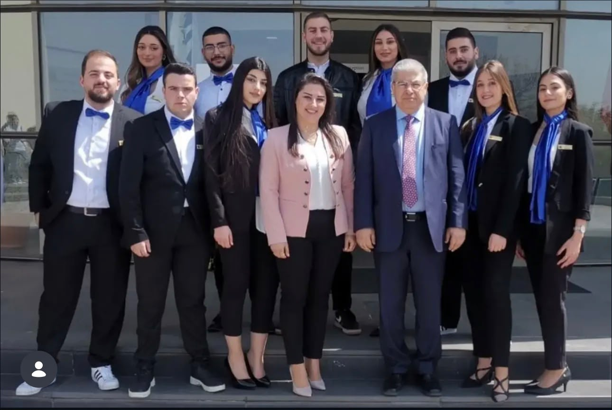
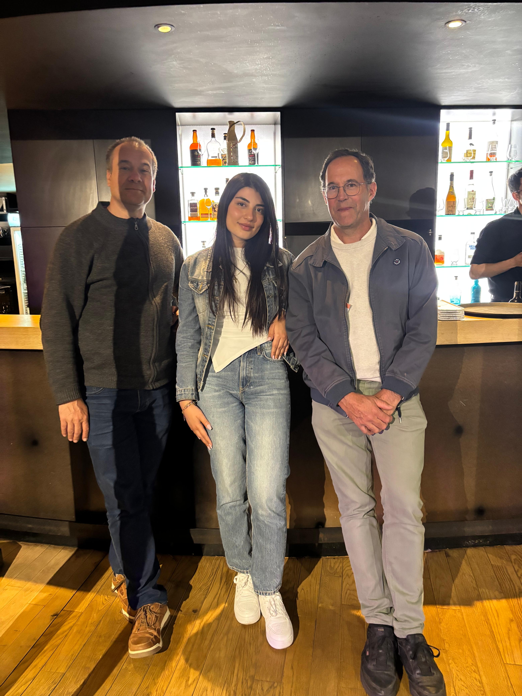

Student & Professional Journey

Student Leadership — University of Balamand
Active member of the OSA student organization, contributing to student activities, institutional events, and community engagement initiatives.
Participated in the reception of representatives from the American Task Force for Lebanon during an official visit to the Issam M. Fares Faculty of Technology.

Project Presentation Days — Lannion
Participation in large-scale technical presentation days in Lannion, presenting projects and exchanging with companies and journalists.

Team Life — Orange Business
Participation in team events celebrating career milestones and reinforcing team cohesion during the work-study experience.

Team Collaboration — Lannion
Collaborative moments with engineering teams during professional events in Lannion, strengthening communication, teamwork, and project coordination.